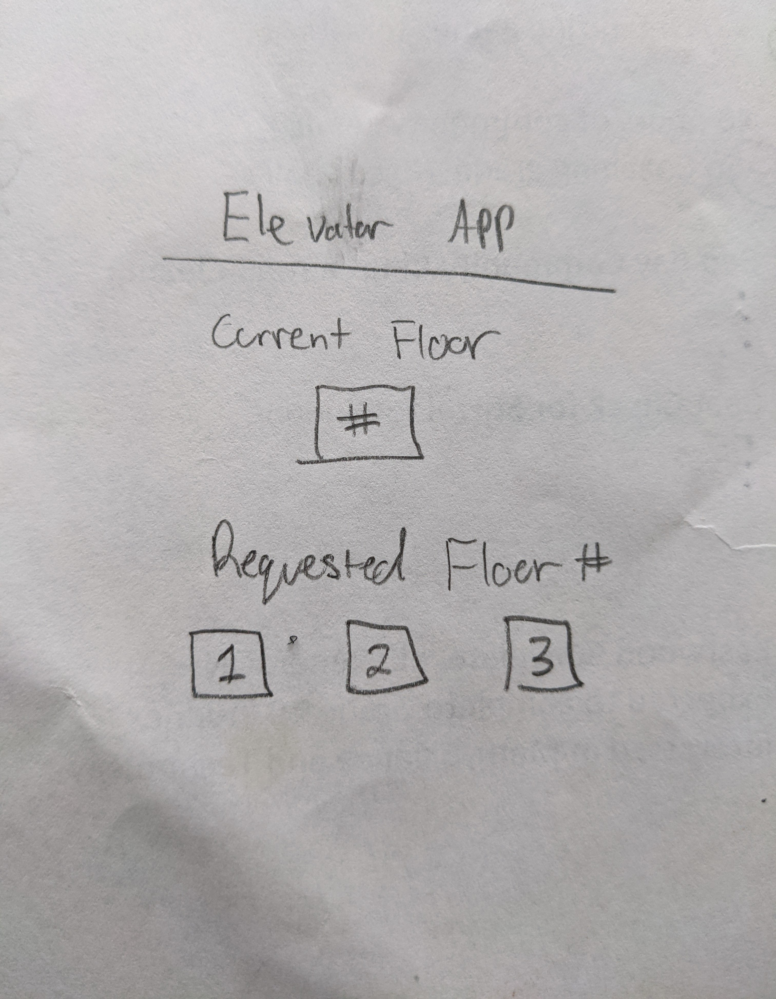
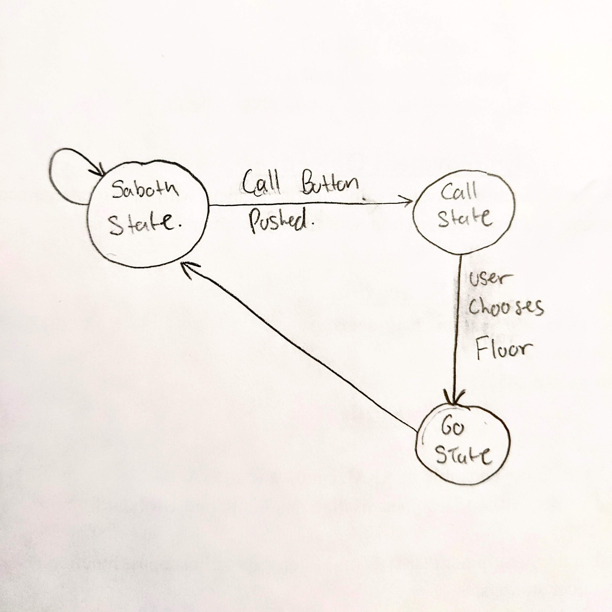
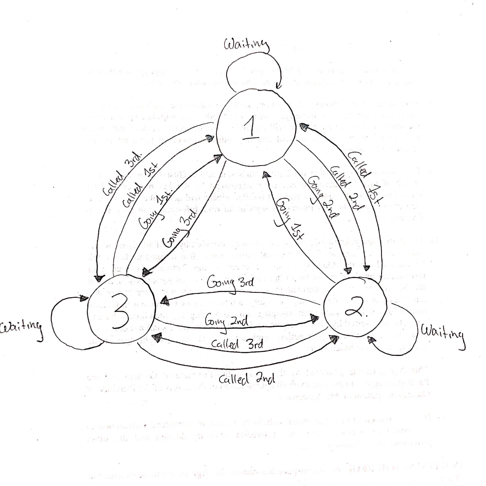

Welcome to Greg's Logbook
Week 1
-
One of the tasks I completed was I had built a framework to use the logbook on the website of the remote server.
The framework consists of a main menu page that holds links to all of the seperate pages to each logbook entry per week.
The framework I created is very barebones and contains a portion of CSS to style the entrys so everything looks better than standard CSS.
I also created a template that both Caleb and Andrew have in their posession to copy and paste to speed up the time to have all the logbooks with the same look and feel.
-
Created an about.html page which is our projects home website that is used as a main menu for the project.
At the moment the about.html menu holds basic information and contains links to each members logbook menu.
-
Created a git repository that is currently linked to /var/www/html/ on the raspberry pi so the repository is being pushed to, we just have to do some simple commands to
pull all of the work onto the working directory to be hosted. On my computers end, I have a development directory that I pull from the git hub repository and copy the files out of the
directory and into my own personal web hosting directory under /var/www/html/ where I can do development and see changes before I push onto the raspberry pi.
-
Able to connect and control the elevator by the program that exists currently and was able to verify its operation by watching the stream over vlc to verify the operation and
connectivity to ensure that there was no issues at the current moment with the raspberry pi.
-
Helped adrew with the test plan of the raspberry pi connectivity by investigating the simple curl command to verify that we have access to the raspberry pi through linux.
-
Began to think of a design for the UI. Here is an image of a quick drawing of a prototype for the layout for the elevator.

Week 2
-
Recorded and uploaded a demonstration video on youtube showing that we have connection to the raspberry pi through http as well as ssh.
-
Added a new page called video.html which holds a framework for the location for all of the demo videos that will have to come.
-
Changed the logic of the website as well as the flow of it by adding an index.html which is the main menu for the whole website
-
Changed the flow of the logbooks by making it one file with reference links to the headers to cut down on the number of files being used.
-
Fixed all of the files and seperated out all of the css code into dedicated css files for the respectied html files.
-
Improved the index.html file with adding a better looking main menu system.
-
Fixed all of the CSS for all of the files having a more consistent look.
-
Created a rough draft of a Finite State Machine to get feedback on to improve it.
-

Week 3
-
I re-uploaded the CAN demonstration with a demo of it working as expected.
-
Implimented Boostrap to the about.html page with images and short bios for each team member.
-
Positioned GUI interactiable images created by andrew and implimented the Web-rtc stream in the GUI.
-
Wrote out the project plan using html tables.
-
Created the diagnostics page to host all of the diagnostics of the website and the project.
-
Perfomed a re-attmpt of the the FSM drawing from provided feedback.
-

Week 4
-
I Worked on the GUI to make the images clickable by using javascript. How I did this was I used the html element "map" and mapped off a clickable area within
the image where if you click within the area, it runs a javascript funtion paired with that button area.
Within the javascript code it runs the function and finds the image source from the element ID that is hard coded into the function to replace it with the lit up
version of the image that is supplied in the image folder.
-
Some minor issues that I ran into was I wanted to get the image to be able to click on and off. So I had to write an if statement to get that to work.
Images sources in javascript have to give the full path of the image. Example:"http://142.156.193.130:50000/gui/img/image.png" where I was perscribing relative paths
and it was causing alot of issues.
Week 5
-
I worked on putting in place a version of a login page / system. To get this to work I put in a new table in the database under "elevator" called "user".
-
The login system works so to sign up you have to submit a user and a password and you will be able to login to teh website.
-
Although since not every page is php at the moment, this login is not enforced and you can manually navigate the web pages by typing in the URL.
But a login system is in place and can be easily expanded to make sure the whole website is protected.
-
Next steps include making it so if you close the webpage, it destroys the PHP session so when you log back on to the webpage you have to re-login.
Week 7
-
I worked with the login page significantly and was able to protect pages like the elevator control and the diagnostics pages from people who arent signed up.
-
I was able to get php to work in the gui so when you press one of the buttons it will register by the php displaying what floor youre on even tho nothing
is working on the backend yet to support this. This was a small step.
-
I also was able to connect to the database and pull information nessecary from the diagnostics page like the number of users that are connected.
This was just a first step into figuring out diagnostics.
Week 8
-
I worked on this week on solving the issue of images going back to their default state when the page is refreshed.
-
I have this sucsessfully working on the call buttons for the elevator by using javascript localStorage.getItem and localStorage.setItem.
-
So the image state is saved into local storage and I have an image initialization function that sets the different image to what are set in the localStorage.
-
Next steps are tackeling the control panel states and have to figure out the logic of and create the images on how to go about doing that.
Week 9
-
I worked this week on solving the issue of the inside elevator panel not lighting up properly.
-
This is worked by having seperate images that are overlayed over the main image. When you click and unclick the image, it toggles back and forth from the .style.display("none")
to .style.display("block"). So there is a stock image and then 7 different images that are overlayed that appear when you click the different images.
-
Each time you click the image on or off, it sends a different GET message to the php which we have displaying on the GUI when you press a button.
-
I also got the current floor indicator working so it displays what the current floor the car is by reading the values from the database.
Week 10
-
I worked this week on getting the audio messages to play when pressing the call buttons.
-
I origionally had working as part of the javascript but when I would click the button, the page would refresh and then no audio would play because of that.
So to get around that I have the the audio queue happen inside of php so after the button has been pressed and the page has been reloaded the audio will play.
-
I also began investigating inserting into the database when pressing the buttons but was running into issues with it displaying error messages that there was an invalid
parameter number: Parameter not defined.
-
The main goal for nextweek is to solve this issue and have the values be inserted into the database when pressing the gui buttons.
Return